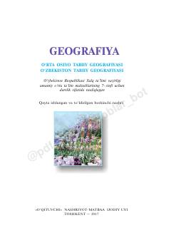

G77-sinf uchun O'rta Osiyo va O'zbekiston tabiiy geografiyasi bo'yicha darslik.
Ushbu darslik 7-sinf o'quvchilari uchun mo'ljallangan bo'lib, O'rta Osiyo va O'zbekistonning tabiiy geografiyasini qamrab oladi. Kitobda mintaqaning geologik tuzilishi, iqlimi, relyefi, suv resurslari hamda tabiatdan oqilona foydalanish masalalari batafsil yoritilgan.